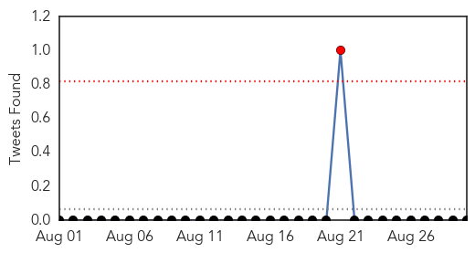
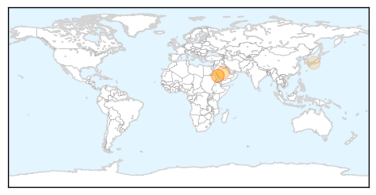
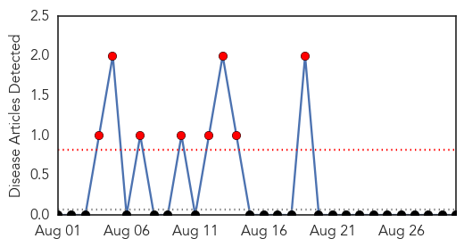

Toggle navigation
Early Warning
Return to Dashboard
Points of Interest
About the Project
Case Comparison
Aug 30, 2014
MERS
return to detail view
30-Day Web Trend
0
alerts
, 0
warnings
X
30-Day Twitter Trend
1
alerts
, 0
warnings

X
Article Locations

X
Article Confidences
X
Top Articles:
0.986
Study finds little spread of MERS-CoV in Saudi households
0.984
MERS Has Low Transmissibility But It's Still Dangerous
0.736
Thousands of doctors trained to fight infections during Haj
0.578
Thousands of doctors trained to fight infections during HajHealthcare
Top Tweets:
No tweets found for Aug 30, 2014
Yellow Fever
return to detail view
30-Day Web Trend
8
alerts
, 0
warnings

X
30-Day Twitter Trend
0
alerts
, 0
warnings
X
Article Locations
X
Article Confidences
X
Top Articles:
No articles found for Aug 30, 2014
Top Tweets:
No tweets found for Aug 30, 2014